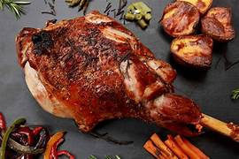
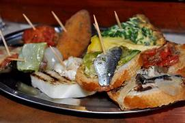

food - - Image Search results
Yahoo Image Search Results Page
Header
Search Box
Search query
Search
All
Images
Videos
Local
News
Filter
Size
All
Small
Medium
Large
Extra-large
Colour
All
Colour only
Black & White
Type
All
Photo
Clipart
Line drawing
Animated GIF
Transparent
Layout
All
Square
Wide
Tall
People
All
Faces only
Head and shoulders
No people
Time
All
Past 24 hours
Past week
Past month
Past year
Usage Rights
All
All Creative Commons
Public domain
Free to share and use
Free to share and use commercially
Free to modify, share and use
Free to modify, share and use commercially
Search Results
7 World Wide Cuisines And Their Most Popular Food - Love Travel Magazine
lovetravelmag.com
1210x890
View image
View page


Show More Images


![](https://in.images.search.yahoo.com/yhs/view;_ylt=AwrKC1O8kXJm7j0vxIAO9olQ;_ylu=c2VjA3NyBHNsawNpbWcEb2lkAzRmMGJlYWRiYTg5MjliMmZkMGY1YzUwY2NiZjZhNDI1BGdwb3MDNwRpdANiaW5n?back=https%3A%2F%2Fin.images.search.yahoo.com%2Fyhs%2Fsearch%3Fp%3Dfood%26ei%3DUTF-8%26type%3D0_1023_102_1106_108_230619%26fr%3Dyhs-reb-ext_onelaunch%26hsimp%3Dyhs-ext_onelaunch%26hspart%3Dreb%26tab%3Dorganic%26ri%3D7&w=2000&h=1100&imgurl=www.localsamosa.com%2Fwp-content%2Fuploads%2F2021%2F07%2FIndian-food-1.jpg&rurl=https%3A%2F%2Fwww.localsamosa.com%2F2021%2F07%2F27%2Fheres-to-the-food-lane-these-favourite-finds-by-food-writers-will-make-you-want-to-explore-delicacies-like-never-before%2F&size=273.3KB&p=food&oid=4f0beadba8929b2fd0f5c50ccbf6a425&fr2=&fr=yhs-reb-ext_onelaunch&tt=Here%26%2339%3Bs+to+the+food+lane%21+These+favourite+finds+by+Food+writers+will+...&b=0&ni=21&no=7&ts=&tab=organic&sigr=zMviyJKJRKm3&sigb=HUhyb.ijhU7A&sigi=EuUy65PJ.yUj&sigt=kiXF_5N6g1Nx&.crumb=EZOVRkO4He8&fr=yhs-reb-ext_onelaunch&hsimp=yhs-ext_onelaunch&hspart=reb&type=0_1023_102_1106_108_230619)


![](https://in.images.search.yahoo.com/yhs/view;_ylt=AwrKC1O8kXJm7j0v1oAO9olQ;_ylu=c2VjA3NyBHNsawNpbWcEb2lkAzNlNGM0NDhiM2FkNTczZmEzMjU2MTRhMjQ2NTZjMjQ3BGdwb3MDMjUEaXQDYmluZw--?back=https%3A%2F%2Fin.images.search.yahoo.com%2Fyhs%2Fsearch%3Fp%3Dfood%26ei%3DUTF-8%26type%3D0_1023_102_1106_108_230619%26fr%3Dyhs-reb-ext_onelaunch%26hsimp%3Dyhs-ext_onelaunch%26hspart%3Dreb%26tab%3Dorganic%26ri%3D25&w=3865&h=2576&imgurl=www.tripsavvy.com%2Fthmb%2FTZ9ZD8mSmymgT47RlgVkQdTzuuQ%3D%2F3865x2576%2Ffilters%3Ano_upscale%28%29%3Amax_bytes%28150000%29%3Astrip_icc%28%29%2Fhomemade-baked-vegetarian-empanadas-640511626-5aa6e3e86bf0690036d7f76a.jpg&rurl=https%3A%2F%2Fwww.tripsavvy.com%2Ftraditional-dishes-in-uruguay-1637546&size=1906.1KB&p=food&oid=3e4c448b3ad573fa325614a24656c247&fr2=&fr=yhs-reb-ext_onelaunch&tt=Traditional+Dishes+in+Uruguay&b=0&ni=21&no=25&ts=&tab=organic&sigr=3iU8QkZmKr._&sigb=g6eZMdob6DEQ&sigi=zqKbwRyXhAk0&sigt=xKfVdgTuWPOm&.crumb=EZOVRkO4He8&fr=yhs-reb-ext_onelaunch&hsimp=yhs-ext_onelaunch&hspart=reb&type=0_1023_102_1106_108_230619)


![](https://in.images.search.yahoo.com/yhs/view;_ylt=AwrKC1O8kXJm7j0v3IAO9olQ;_ylu=c2VjA3NyBHNsawNpbWcEb2lkAzYyMThhM2ZmMDNlYTkxNTA0ZDc5MjFkMzJkNTFkNTIyBGdwb3MDMzEEaXQDYmluZw--?back=https%3A%2F%2Fin.images.search.yahoo.com%2Fyhs%2Fsearch%3Fp%3Dfood%26ei%3DUTF-8%26type%3D0_1023_102_1106_108_230619%26fr%3Dyhs-reb-ext_onelaunch%26hsimp%3Dyhs-ext_onelaunch%26hspart%3Dreb%26tab%3Dorganic%26ri%3D31&w=2048&h=1666&imgurl=media1.popsugar-assets.com%2Ffiles%2Fthumbor%2FtfAIFexNUyeuECsNY9HYJmlloiY%2Ffit-in%2F2048xorig%2Ffilters%3Aformat_auto-%21%21-%3Astrip_icc-%21%21-%2F2015%2F02%2F19%2F903%2Fn%2F1922398%2Fa08f5be6_e9abb513_shutterstock_206484388.jpg&rurl=http%3A%2F%2Fwww.popsugar.com%2Ffood%2FMost-Unlikely-Best-Tasting-Food-Combinations-36897215&size=265.8KB&p=food&oid=6218a3ff03ea91504d7921d32d51d522&fr2=&fr=yhs-reb-ext_onelaunch&tt=The+Most+Unlikely+and+Best-Tasting+Food+Combinations+%7C+POPSUGAR+Food&b=0&ni=21&no=31&ts=&tab=organic&sigr=zRVaFBvnJMvi&sigb=CeCwsLLWhSvb&sigi=MTW1XL9_VDKa&sigt=wojxWdEDJdvB&.crumb=EZOVRkO4He8&fr=yhs-reb-ext_onelaunch&hsimp=yhs-ext_onelaunch&hspart=reb&type=0_1023_102_1106_108_230619)


![](https://in.images.search.yahoo.com/yhs/view;_ylt=AwrKC1O8kXJm7j0v44AO9olQ;_ylu=c2VjA3NyBHNsawNpbWcEb2lkAzk3NjE0ZjdjOGNjYWI4MjEyZmUyNTQ3Njc5Y2I0NWI4BGdwb3MDMzgEaXQDYmluZw--?back=https%3A%2F%2Fin.images.search.yahoo.com%2Fyhs%2Fsearch%3Fp%3Dfood%26ei%3DUTF-8%26type%3D0_1023_102_1106_108_230619%26fr%3Dyhs-reb-ext_onelaunch%26hsimp%3Dyhs-ext_onelaunch%26hspart%3Dreb%26tab%3Dorganic%26ri%3D38&w=474&h=316&imgurl=www.ytravelblog.com%2Fwp-content%2Fuploads%2F2013%2F03%2FThai-street-food-1-of-11.jpg&rurl=https%3A%2F%2Fwww.athensmagazine.gr%2Fevents%2Ftaste%2F5992-thai-food-festival-geyseis-taylandhs-sto-astir-palace&size=533.5KB&p=food&oid=97614f7c8ccab8212fe2547679cb45b8&fr2=&fr=yhs-reb-ext_onelaunch&tt=Thai+Food+Festival%3A+%CE%93%CE%B5%CF%8D%CF%83%CE%B5%CE%B9%CF%82+%CE%A4%CE%B1%CF%8B%CE%BB%CE%AC%CE%BD%CE%B4%CE%B7%CF%82+%CF%83%CF%84%CE%BF+Astir+Palace%21+-+%CE%93%CE%B5%CF%8D%CF%83%CE%B7+...&b=0&ni=21&no=38&ts=&tab=organic&sigr=MYrS3RF9McpH&sigb=dq.4R903_Mjp&sigi=uNPOMEpciXRh&sigt=6pUndyUwmgyN&.crumb=EZOVRkO4He8&fr=yhs-reb-ext_onelaunch&hsimp=yhs-ext_onelaunch&hspart=reb&type=0_1023_102_1106_108_230619)


![](https://in.images.search.yahoo.com/yhs/view;_ylt=AwrKC1O8kXJm7j0v54AO9olQ;_ylu=c2VjA3NyBHNsawNpbWcEb2lkA2NlNjEwOTJiM2QyZWY2MGZiYjkyZmM3YzUxZGRlYzE4BGdwb3MDNDIEaXQDYmluZw--?back=https%3A%2F%2Fin.images.search.yahoo.com%2Fyhs%2Fsearch%3Fp%3Dfood%26ei%3DUTF-8%26type%3D0_1023_102_1106_108_230619%26fr%3Dyhs-reb-ext_onelaunch%26hsimp%3Dyhs-ext_onelaunch%26hspart%3Dreb%26tab%3Dorganic%26ri%3D42&w=2100&h=1400&imgurl=images.lifestyleasia.com%2Fwp-content%2Fuploads%2Fsites%2F6%2F2022%2F12%2F01175405%2Fbest-taiwan-night-markets-taiwanese-sausage-street-food.jpg&rurl=https%3A%2F%2Fwww.lifestyleasia.com%2Fsg%2Ftravel%2Fasia%2Fbest-taiwan-night-markets-guide-to-the-best-street-food%2F&size=310.6KB&p=food&oid=ce61092b3d2ef60fbb92fc7c51ddec18&fr2=&fr=yhs-reb-ext_onelaunch&tt=5+best+Taiwan+night+markets+and+the+street+food+to+order+there&b=0&ni=21&no=42&ts=&tab=organic&sigr=4cdqBnXi1i_F&sigb=u3AcIn0Q9nnN&sigi=tkqng84vGpo9&sigt=TiNxgPmqMeTc&.crumb=EZOVRkO4He8&fr=yhs-reb-ext_onelaunch&hsimp=yhs-ext_onelaunch&hspart=reb&type=0_1023_102_1106_108_230619)


![](https://in.images.search.yahoo.com/yhs/view;_ylt=AwrKC1O8kXJm7j0v74AO9olQ;_ylu=c2VjA3NyBHNsawNpbWcEb2lkAzU0MjVhNGIyYzA4MjdhMTc2MTc0NmFlODg3M2MzNTAzBGdwb3MDNTAEaXQDYmluZw--?back=https%3A%2F%2Fin.images.search.yahoo.com%2Fyhs%2Fsearch%3Fp%3Dfood%26ei%3DUTF-8%26type%3D0_1023_102_1106_108_230619%26fr%3Dyhs-reb-ext_onelaunch%26hsimp%3Dyhs-ext_onelaunch%26hspart%3Dreb%26tab%3Dorganic%26ri%3D50&w=1440&h=823&imgurl=worldoffoodanddrink.worldtravelguide.net%2Fwp-content%2Fuploads%2F2019%2F03%2Fshu-Food-to-try-in-Mumbai-796385446-1440x823.jpg&rurl=https%3A%2F%2Fwww.your-space.in%2Fblogs%2Fmumbai-places-to-visit-and-experiences-to-try-to-get-into-the-festive-spirit%2F&size=261.7KB&p=food&oid=5425a4b2c0827a1761746ae8873c3503&fr2=&fr=yhs-reb-ext_onelaunch&tt=6+Mumbai+Places+To+Visit+And+Experiences+To+Try+To+Get+Into+The+Festive+...&b=0&ni=21&no=50&ts=&tab=organic&sigr=guG.yTdvrU1Q&sigb=SJssicAxTr3w&sigi=zOLJSALp.FLA&sigt=rAmshd3u2OkC&.crumb=EZOVRkO4He8&fr=yhs-reb-ext_onelaunch&hsimp=yhs-ext_onelaunch&hspart=reb&type=0_1023_102_1106_108_230619)

![](https://in.images.search.yahoo.com/yhs/view;_ylt=AwrKC1O8kXJm7j0v8YAO9olQ;_ylu=c2VjA3NyBHNsawNpbWcEb2lkA2I5ZGI5NWVhMjEzYzVjZjdmZGY4MDY5ODUzYWQ4NjE2BGdwb3MDNTIEaXQDYmluZw--?back=https%3A%2F%2Fin.images.search.yahoo.com%2Fyhs%2Fsearch%3Fp%3Dfood%26ei%3DUTF-8%26type%3D0_1023_102_1106_108_230619%26fr%3Dyhs-reb-ext_onelaunch%26hsimp%3Dyhs-ext_onelaunch%26hspart%3Dreb%26tab%3Dorganic%26ri%3D52&w=2123&h=1413&imgurl=fthmb.tqn.com%2FA1-8OUA6N3nePwjjIC3XJeweDOg%3D%2F2123x1413%2Ffilters%3Afill%28auto%2C1%29%2FFarmersmarketproduce-GettyImages-533769249-59488abd5f9b58d58a75c200.jpg&rurl=http%3A%2F%2Flocalfoods.about.com%2Fod%2Ffinduselocalfoods%2Ftp%2F5-Reasons-to-Eat-Local-Foods.htm%3Futm_source%3Dpinterest%26utm_medium%3Dsocial%26utm_campaign%3Dshareurlbuttons_nip&size=324.2KB&p=food&oid=b9db95ea213c5cf7fdf8069853ad8616&fr2=&fr=yhs-reb-ext_onelaunch&tt=Top+8+Reasons+to+Eat+Local+Foods&b=0&ni=21&no=52&ts=&tab=organic&sigr=ihUeUAHm4AXA&sigb=zAHuPWB4dOua&sigi=kUmwBdemg600&sigt=VHm4xWci2rZn&.crumb=EZOVRkO4He8&fr=yhs-reb-ext_onelaunch&hsimp=yhs-ext_onelaunch&hspart=reb&type=0_1023_102_1106_108_230619)


![](https://in.images.search.yahoo.com/yhs/view;_ylt=AwrKC1O8kXJm7j0v9IAO9olQ;_ylu=c2VjA3NyBHNsawNpbWcEb2lkAzlhOWY3YTExNzc4ODA0OWYwODliNzc2ZTYxMjhjZjM5BGdwb3MDNTUEaXQDYmluZw--?back=https%3A%2F%2Fin.images.search.yahoo.com%2Fyhs%2Fsearch%3Fp%3Dfood%26ei%3DUTF-8%26type%3D0_1023_102_1106_108_230619%26fr%3Dyhs-reb-ext_onelaunch%26hsimp%3Dyhs-ext_onelaunch%26hspart%3Dreb%26tab%3Dorganic%26ri%3D55&w=2000&h=1334&imgurl=img.freepik.com%2Fpremium-photo%2Fgroup-south-indian-food-like-masala-dosa-uttapam-idli-idly-wada-vada-sambar-appam-semolina-halwa-upma-served-banana-leaf-with-colourful-chutneys-selective-focus_466689-25669.jpg%3Fw%3D2000&rurl=https%3A%2F%2Fwww.freepik.com%2Fpremium-photo%2Fgroup-south-indian-food-like-masala-dosa-uttapam-idli-idly-wada-vada-sambar-appam-semolina-halwa-upma-served-banana-leaf-with-colourful-chutneys-selective-focus_16609393.htm&size=873.5KB&p=food&oid=9a9f7a117788049f089b776e6128cf39&fr2=&fr=yhs-reb-ext_onelaunch&tt=Premium+Photo+%7C+Group+of+south+indian+food+like+masala+dosa%2C+uttapam+...&b=0&ni=21&no=55&ts=&tab=organic&sigr=l3RDnC8C109J&sigb=UXwkG129HpIX&sigi=4J_VSja6g1qh&sigt=2OyrrI9_h99e&.crumb=EZOVRkO4He8&fr=yhs-reb-ext_onelaunch&hsimp=yhs-ext_onelaunch&hspart=reb&type=0_1023_102_1106_108_230619)
![](https://in.images.search.yahoo.com/yhs/view;_ylt=AwrKC1O8kXJm7j0v9YAO9olQ;_ylu=c2VjA3NyBHNsawNpbWcEb2lkAzVmMDJkMGIzN2RhZGJhMjhjNjEzMTM5ZTU2Njc2ZGI2BGdwb3MDNTYEaXQDYmluZw--?back=https%3A%2F%2Fin.images.search.yahoo.com%2Fyhs%2Fsearch%3Fp%3Dfood%26ei%3DUTF-8%26type%3D0_1023_102_1106_108_230619%26fr%3Dyhs-reb-ext_onelaunch%26hsimp%3Dyhs-ext_onelaunch%26hspart%3Dreb%26tab%3Dorganic%26ri%3D56&w=4928&h=3280&imgurl=www.thespruceeats.com%2Fthmb%2FXqsPvgnFNDl1gu0Jl8z2iFHjYQY%3D%2F4928x3280%2Ffilters%3Ano_upscale%28%29%3Amax_bytes%28150000%29%3Astrip_icc%28%29%2Fsouth-african-potjiekos-in-black-pot-478688819-5ac23cf80e23d900368ed60f.jpg&rurl=https%3A%2F%2Fwww.thespruceeats.com%2Fbest-south-african-foods-to-try-39494&size=1776.8KB&p=food&oid=5f02d0b37dadba28c613139e56676db6&fr2=&fr=yhs-reb-ext_onelaunch&tt=Top+10+South+African+Foods+to+Try&b=0&ni=21&no=56&ts=&tab=organic&sigr=fU41T1AbED3I&sigb=SUKk_bzOjlvh&sigi=ndh_._Wb_vWZ&sigt=JV_TbJALWJkW&.crumb=EZOVRkO4He8&fr=yhs-reb-ext_onelaunch&hsimp=yhs-ext_onelaunch&hspart=reb&type=0_1023_102_1106_108_230619)


{kind=link}